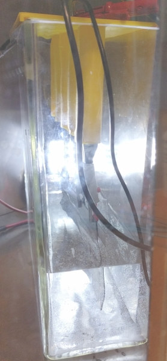
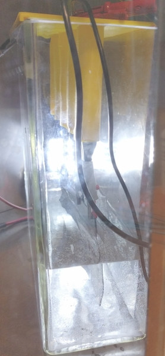

20170809 Functionalised graphene by oxidative exfoliation
library(tidyverse)
library(units)
V = set_units(200, mL) # Volume of 0.1 M H2SO4 to be used
C_diazo = set_units(2, mmol/L)
M_nitro = set_units(202.64, mg/mmol) # 4-Nitrophenethylamine hydrochloride
M_nitrite = set_units(69.00, mg/mmol) # NaNO2
n_nitro = V * C_diazo
n_nitrite = n_nitro * 2
m_nitro = n_nitro * M_nitro
m_nitrite = n_nitrite * M_nitriteProtocol
This production method is inspired by the work by Belanger and co-workers.1
In-situ generation of 2 mmol/L 4-(2-aminoethyl)benzenediazonium solution
200 mL 0.1 M H2SO4 is mixed with 81.056 mg 4-Nitrophenethylamine hydrochloride (0.4 mmol) and 55.2 mg NaNO2 (0.8 mmol) and stirred for 15 min.
A small amount of ferrocene is dissolved in 1 mL solution to confirm that the diazonium compound has been formed (green color).
Exfoliation of functionalised graphene flakes
A 2-electrode setup is made with 100 cm2 0.5 mm graphite foil (cut into four 5x5 cm2 pieces) as the anode (+) and a sheet of stainless steel as the cathode (-) in a tall 400 mL beaker. Consider putting a piece of filter paper between the electrodes to prevent exfoliated graphene contacting the cathode. The freshly made diazonium-solution is poured into the beaker and the graphite exfoliated at 10 V for 1 hour (longer if the foil is not properly exfoliated at this stage). This was done in our grounded cage, and the ground terminal of the power supply was connected to the cage.
Wash the remaning graphite foil with water and dry it (for yield calculation). The flakes are then collected with vacuum filtration and washed with water and acetonitrile. Ultrasonicate into DMF to disperse the graphene flakes. Leave overnight to sedimentate remaning graphite. Centrifuge the top part of the DMF solution at high speed for 1 hour to sedimentate the remaning graphene. Remove DMF and ultrasonicate in water. Freeze-dry the aqueous solution to obtain graphene powder.
Journal
The experiment was performed as described in the protocol. Graphite foil (for four 5x5 cm pieces, 5.8150 g total mass) was used as the anode. 0.1 M H2SO4 was made by mixing 1.4 mL conc. H2SO4 and diluting until 250 mL H2O.
The diazonium compound formed as described. Tested against ferrocene in DMF and gave a green solution.
The graphite foil was electrolysed for 3 hr + 20 min. Solution got quite hot, so a lot evaporated = lower water level. Generally the current drawn was approx. 4 A.
After the electrolysis another ferrocene test was made. A green color indicated that diazonium-compound was still present in the solution despite the high temperatures reached.
Electrodes were washed and the product filtered, washed with water and acetonitrile. Then ultrasonicated in 250 mL DMF for 30 min and left overnight.
200 mL was decanted the morning after (more could probably have been taking by pipetting off the top layer instead). This was centrifuged at 4000 rpm for 60 min. to collect most of the graphene. The remaining DMF was removed by filtration on 0.45 µm nylon membrane filters. All graphene collected was then dispersed in water by ultrasonication.
The dry weight of remaining graphite = 4.4859 g
New setup
Since the previously mentioned production only allowed for a current of 4 A, we did not fully utilize the maximum capacity of our new power supply (max. 20 A). A new electrochemical cell was constructed as illustrated below. Two large stainless steel plates were placed on either side and used as the cathode, while a graphite foil anode was placed in the middle.
 

Production in this setup was conducted without the diazonium salt, to confirm that everything worked as expected. 1.5 L 0.1 M H2SO4 was made (8.25 mL H2SO4 diluted to 1.5 L). A 8x15 cm2 graphite foil (7.0604 g) was used as the anode. This was electrolysed at 10 V for 1 hour (~18-20 A currrent). The exfoliated product was filtrated and washed with water and ethanol. It was then dried in an oven.
After electrolysis 2.7092 g graphite remained (4.3512 g exfoliated in 1 hour). Mass of graphene exfoliated = 292.6 g - 259.6 g = 33 g. However, there is no way that all of this mass is graphene! Lets try to dry it more. (Update on 20170904: Mass recorded to 261.3 g after 2 h at 50 dC in vacuum oven = 1.7 g graphene.)
References
(1) Ossonon, B. D.; Bélanger, D. Functionalization of Graphene Sheets by the Diazonium Chemistry During Electrochemical Exfoliation of Graphite. Carbon 2017, 111, 83–93 DOI: 10.1016/j.carbon.2016.09.063.